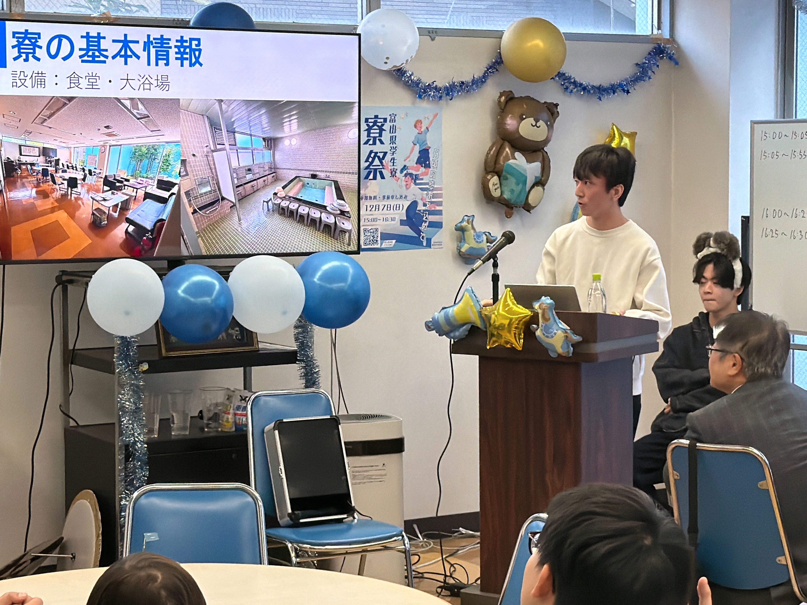
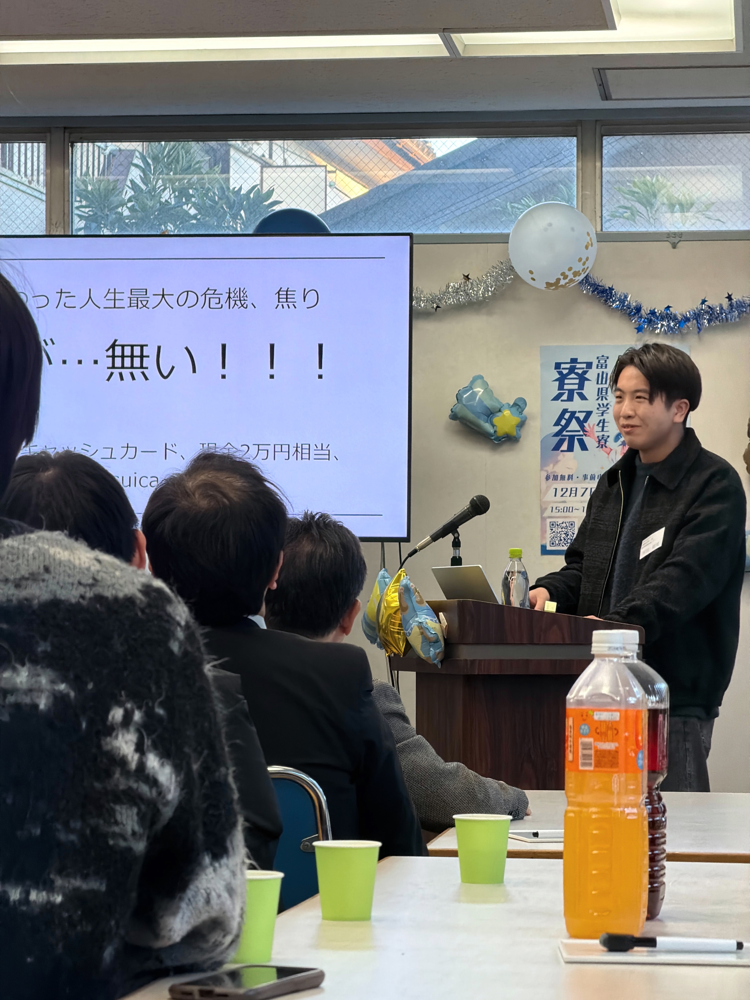
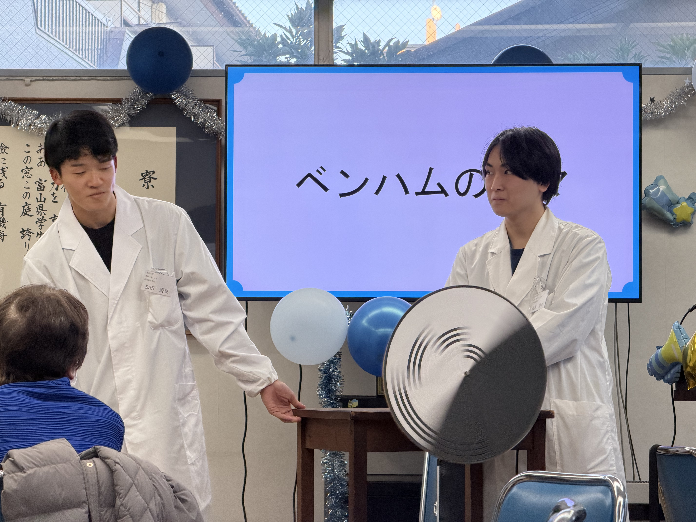
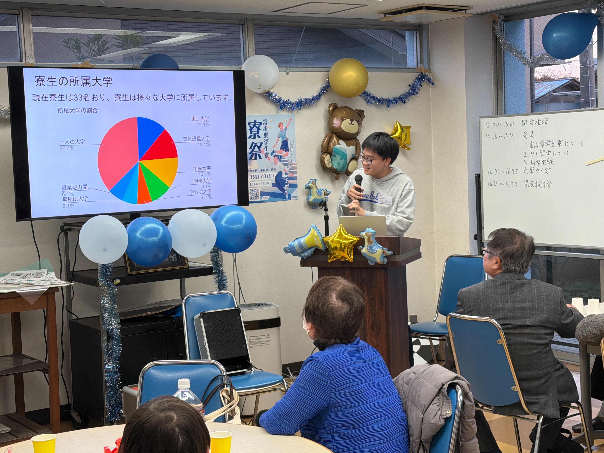
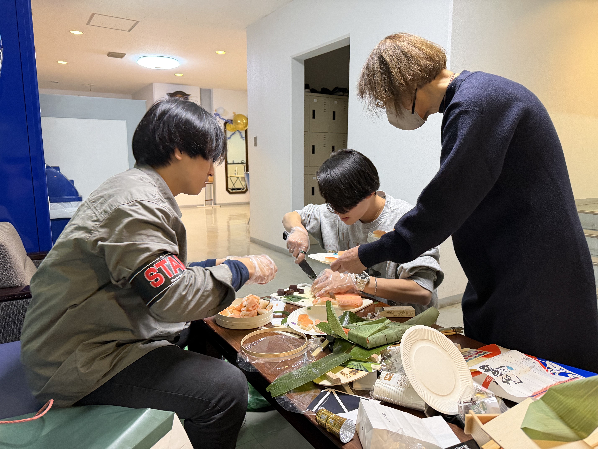
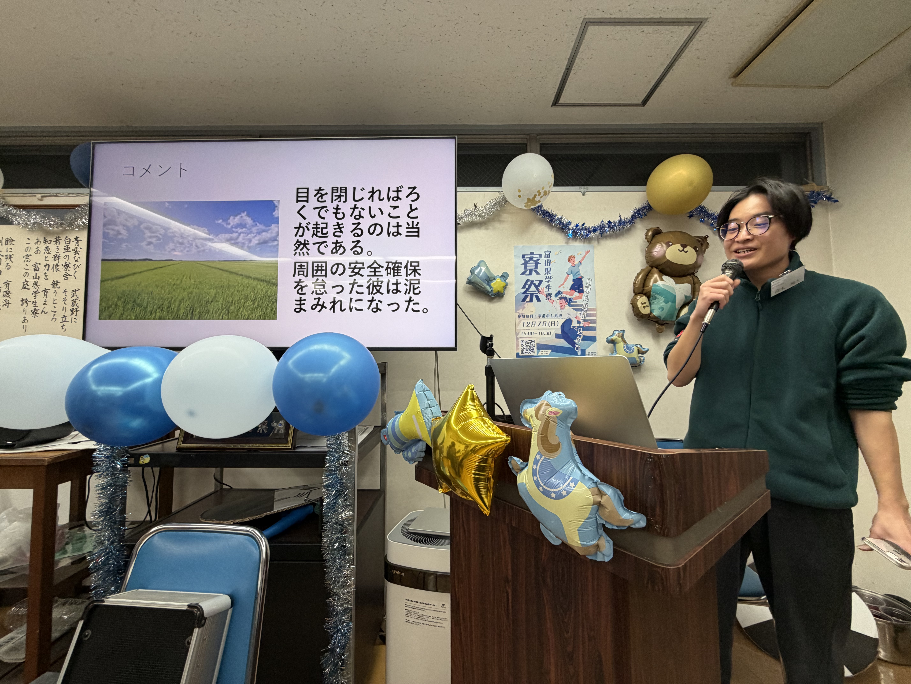
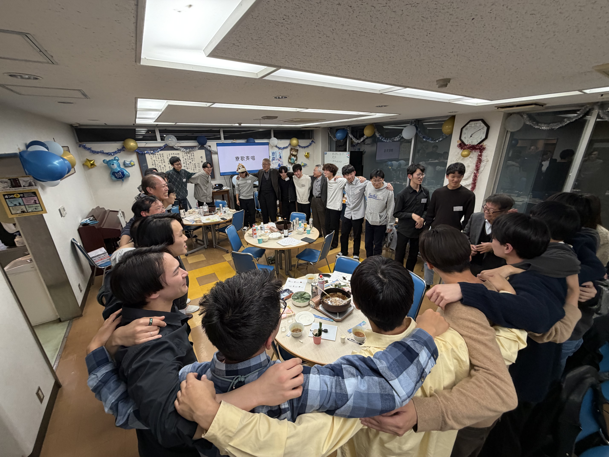

寮祭を開催しました

地域の皆様・保護者の皆様・OBの皆様・来賓の皆様をお迎えし、寮祭を開催いたしました。日頃より青雲寮を支えてくださっている皆様へ感謝をお伝えするとともに、寮の雰囲気や寮生の学び・活動を知っていただき、世代や立場を越えた交流の機会となりました。
第一部：地域交流会（15:00–16:30）
第一部は、寮の活動を知っていただくと同時に、地域の皆様・保護者の皆様・OBの皆様との交流のきっかけを作る場として実施しました。開会にあたっては寮生委員長よりご挨拶を申し上げ、続いて青雲寮の紹介および寮生による発表を行いました。
寮紹介・寮生発表
発表では、青雲寮がどのような寮で、どのような学生が集い、どのような日常を送っているのかを、具体的なエピソードも交えながらお伝えしました。来場された方々にとっては、寮の雰囲気や寮生活の実際を知る機会となり、寮生にとっては自分たちの生活や活動を言葉にして伝える貴重な時間となりました。

また、寮生による個人発表では、各自の学びや経験が紹介されました。留学経験に関する発表では、現地での生活や学びの内容、そこで得た気づきなどが共有され、進路や学びの多様性を感じられる内容となりました。

さらに、科学実験に関する発表では、実演・紹介を通して、寮生が大学で取り組んでいる学問や研究の一端を、わかりやすく伝える工夫がなされました。専門的な内容でありながらも、幅広い世代の方々が楽しめるよう構成され、会場では関心の声が多く聞かれました。
ミニゲーム：大学クイズ

後半には、会場全体で楽しめる企画として「大学クイズ」を実施しました。寮生が在籍する様々な大学について、思わず「へぇ」となる雑学や特色を題材に、テーブル対抗のチーム戦として進行しました。問題が出題されるたびに、各テーブルでは自然と相談が始まり、初対面同士でも会話が生まれる場面が多く見られました。
本企画は、単に知識を競うだけではなく、寮生同士が互いの大学の特色を知るきっかけになること、またOB・保護者・地域の皆様にも、寮生がどのような環境で学んでいるのかを身近に感じていただくことを狙いとしていました。世代や立場を越えて同じ問題に向き合い、答えを考えることで、会場には一体感が生まれ、交流会として非常に意義深い時間となりました。
最後は寮長よりお言葉を頂戴し、司会とともに閉会のご挨拶を申し上げました。
第二部：懇親会（17:00–19:00）
第二部は、OB・来賓の皆様と現役寮生が、食事を共にしながらゆっくり交流する懇親会として開催しました。乾杯の後、司会より本日の流れや注意事項を簡潔にご案内し、会場は和やかな雰囲気の中でスタートしました。
OB自己紹介・ひとこと
懇親会の序盤では、OBの皆様より自己紹介とひとことを頂戴しました。学生時代のお話、現在のお仕事、当時の寮の思い出などが語られ、現役寮生にとっては、進路や社会に出た後のイメージを広げる貴重な機会となりました。また、同じ青雲寮に縁のある先輩方のお話は、寮という共同生活の価値や、つながりの強さを改めて感じる時間にもなりました。
アイスブレイク：利き鱒寿司・羊羹・日本酒

続いてのアイスブレイク企画では、富山を代表する名産品である「ますのすし」「羊羹」「日本酒」をテーマにした利き味企画を実施しました。銘柄や製造元を伏せた状態で試食・試飲し、どのサンプルがどの製品に当たるかを班で相談して当てる形式で進行しました。
テーブルごとにOBと現役寮生が混ざった班で取り組むことで、自然と会話が生まれ、初対面同士でも距離が縮まる場面が多く見られました。「昔はこの銘柄をよく飲んでいた」「この味は懐かしい」など、経験があるからこそ語れるエピソードも飛び交い、世代を越えた共通の話題として大いに盛り上がりました。
寮生の「黒歴史クイズ」コーナー

懇親会の後半には、当初の企画から発展し、寮生の"クスッと笑える黒歴史"を紹介する「黒歴史クイズ」コーナーを行いました。寮生の過去のちょっとした失敗談や、今となっては笑い話にできる出来事を題材に、会場の皆様にクイズ形式で楽しんでいただく企画です。
OBの皆様からは「自分も似たようなことをやった」「その気持ちは分かる」といった共感の声もあり、世代の違いを越えて距離が縮まるきっかけにもなりました。寮生にとっても、普段は見せない一面を共有することで、会場全体がより温かい雰囲気に包まれたことが印象的でした。

締めくくりには寮歌と万歳を行い、会場全体で一体感を共有しながら第二部を終えました。
第三部：ビンゴ大会（19:00–21:00）
第三部は、青雲寮・高岡寮の交流を深め、寮祭の締めとして全員が一体となって楽しむ場として、ビンゴ大会を実施しました。開始にあたっては司会よりルール説明を行い、参加者が安心して楽しめるよう進行を整えました。
会場が一体となるビンゴ本編
ビンゴ本編では、番号が読み上げられるたびに会場の空気が高まり、各所から歓声や笑い声が上がりました。同時に複数名がビンゴとなった際には、その場でじゃんけんを行い、勝者から景品を選ぶ形式としたことで、運と駆け引きの要素も加わり、大いに盛り上がりました。
また、景品は当選順に自由に選べる方式としたため、「何を選ぶか」を周囲と相談したり、互いにおすすめし合ったりする場面も見られ、自然な交流が生まれました。最後まで楽しめるよう「ラストワン賞」も設け、終盤まで会場の熱量が落ちることなく進行できた点も、今年の特色の一つでした。
おわりに
ご来場くださった地域の皆様、保護者の皆様、OBの皆様、来賓の皆様に、心より御礼申し上げます。寮祭を通じて、青雲寮の活動や雰囲気を少しでも身近に感じていただけておりましたら幸いです。
今後も青雲寮は、学生の生活基盤としての役割を果たすとともに、地域・OB・保護者の皆様とのつながりを大切にしながら活動を続けてまいります。引き続き、温かいご支援・ご協力を賜りますよう、何卒よろしくお願い申し上げます。